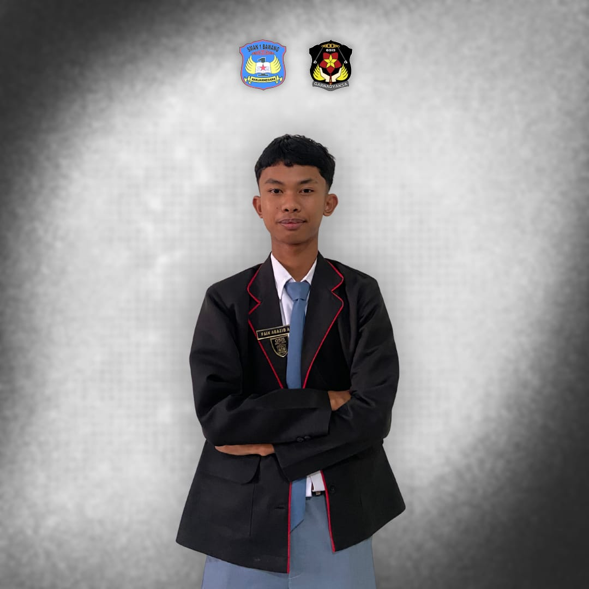
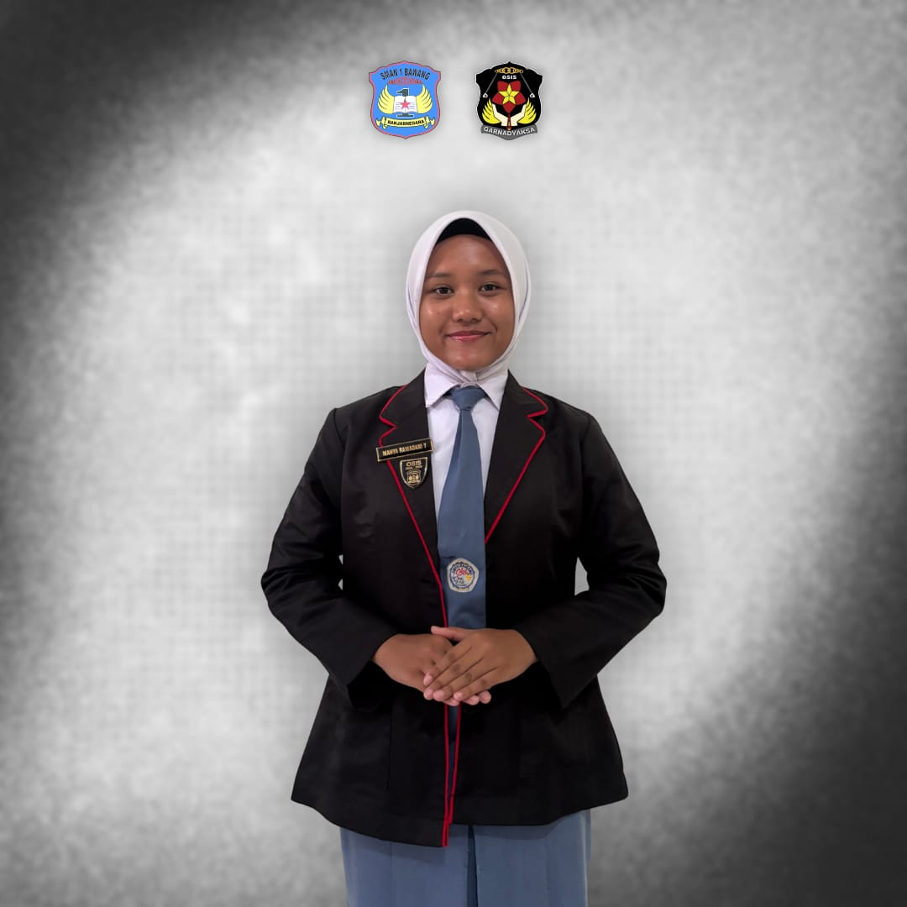
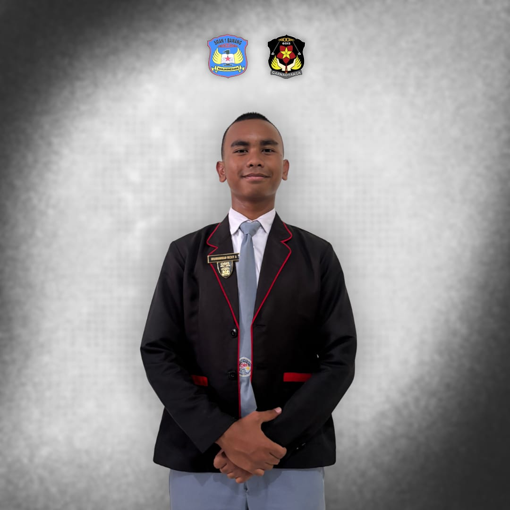
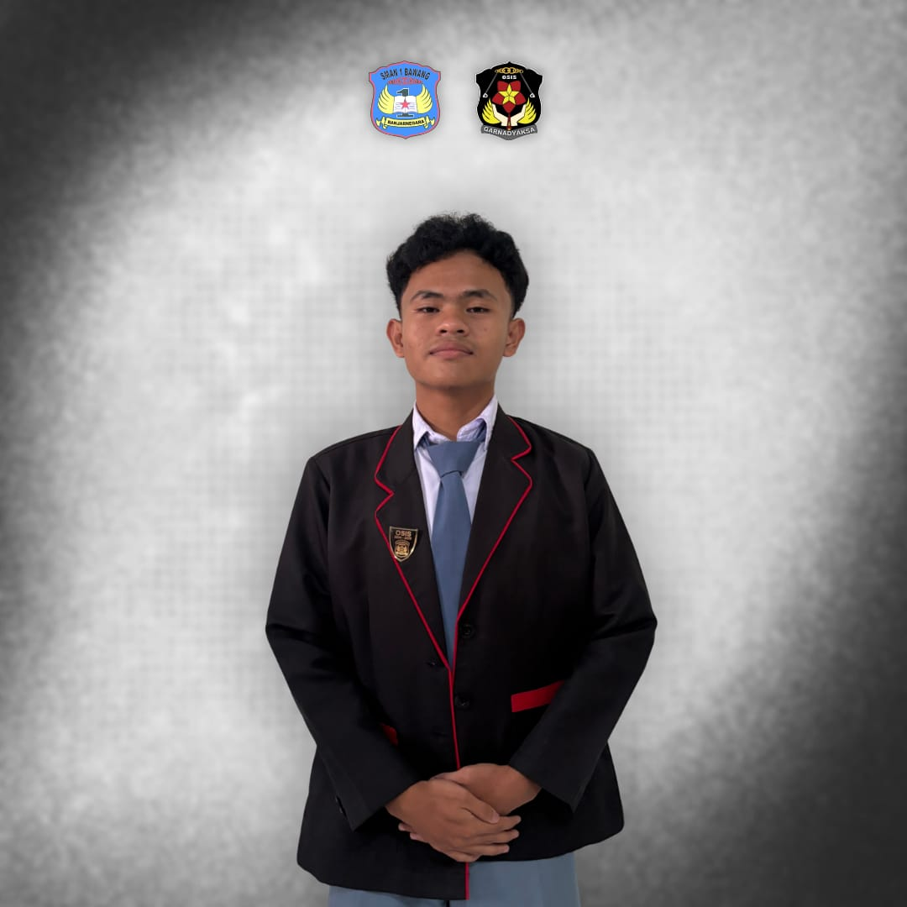
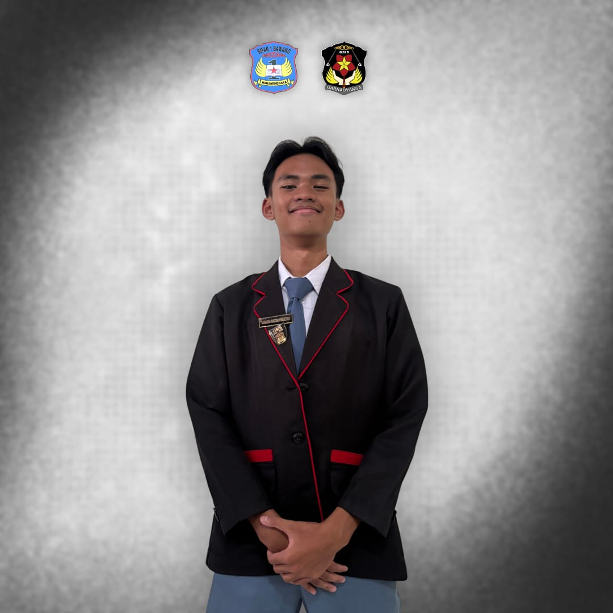
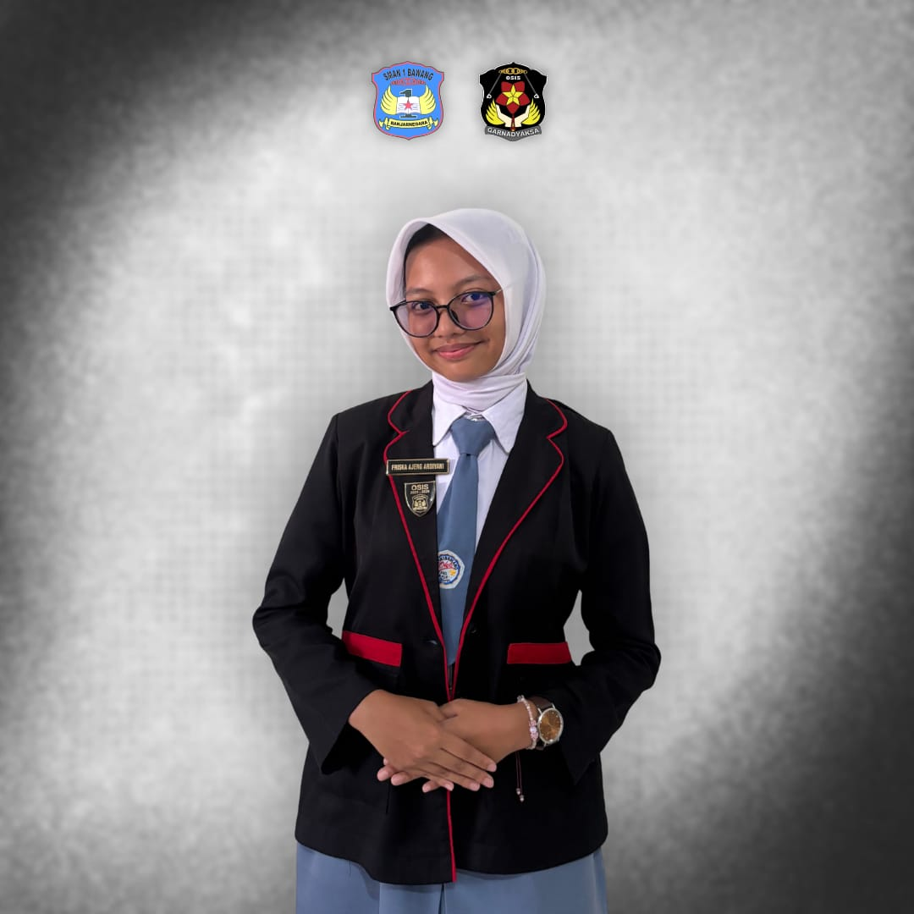

GARNADYAKSA






Sekbid 2: Pembinaan Budi Pekerti Luhur & Akhlak Mulia.
Fokus utama seksi bidang ini adalah menanamkan jiwa nasionalisme, kedisiplinan, dan karakter mulia melalui pengelolaan upacara bendera, peringatan hari besar nasional, serta penegakan tata tertib sekolah.